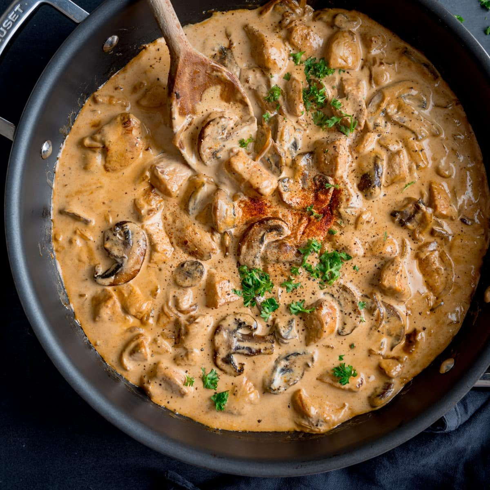

Stroganoff Recipe

Description
For this chicken stroganoff recipe, I wanted something like the traditional beef stroganoff and threw this one together,
writing down everything as I went so I wouldn't forget.
I served it with noodles, but rice would be great too.
For a complete meal, make asparagus for a vegetable side and a green or fruit salad.
Nutmeg seems to be the secret ingredient of many stroganoff recipes.
Ingredients
- 2 cups all-purpose flour for coating
- salt and pepper to taste
- 4 skinless, boneless chicken breast halves
- 1 tablespoon butter
- 2 cups fresh sliced mushrooms
- 1 (10.5 ounce) can condensed cream of chicken soup
- 1 ¼ cups half-and-half cream
- 1 (1 ounce) package dry onion soup mix
- 2 tablespoons chopped fresh parsley
- 2 cloves garlic, minced
- 1 teaspoon browning sauce
- ¼ teaspoon ground nutmeg
- 1 cup sour cream
- ⅛ cup chopped green onion for topping (Optional)
Steps
- Place flour in a shallow dish or bowl and season with salt and pepper. Dredge chicken in seasoned flour to coat.
- Heat butter in a large skillet. Sear coated chicken in melted butter until golden.
- Combine mushrooms, condensed soup, half-and-half, dry onion soup mix, parsley, garlic, browning sauce, and nutmeg in a medium bowl.
Mix all together and pour mixture over chicken in skillet.
Reduce heat to low and let simmer, covered, for 1 hour.
- Stir in sour cream and heat through but do not boil. Top with chopped green onion and serve over noodles or rice.